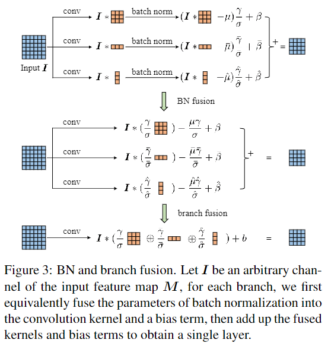

ACNet论文阅读

论文：ACNet: Strengthening the Kernel Skeletons for Powerful CNN via Asymmetric Convolution Blocks
作者：Xiaohan Ding , Yuchen Gu , Guiguang Ding , Jungong Han
录用情况：ICCV'2019
第一作者单位：Beijing National Research Center for Information Science and Technology (BNRist); School of Software, Tsinghua University, Beijing, China
本文是结构重参数化的第一篇文章，使用1D的卷积来增强方形卷积，并且在推理前进行结构重参数化，用这样的块替换先前的网络架构进行训练，或多多少的都在CIFAR和ImageNet上获得了提升，原因可能是1D卷积对旋转、翻转变换具有更好的鲁棒性以及。网络上已经有很多介绍具体方法的文章（知乎 - 【CNN结构设计】无痛的涨点技巧：ACNet），笔者在这里主要关注论文最后剪裁(pruning)实验，感觉还挺独特的。
方法
本文提出的ACB块使用$dd $, \(d\times 1\), \(1\times d\)三种卷积并行训练，并在每个分支使用BN；在推理前，使用吸BN技巧以及卷积对加法的可分配性，将3个分支转换为与之等价的1个\(d\times d\)卷积用于推理。

作者提到，推理时等价并不意味着训练时等价，由于初始化的随机性，并行的几个卷积核可能朝着不同的方向优化，这也引出一个作者的隐忧：如果并行分支的卷积核符号相反，在相加后反而抵消彼此的作用从而削弱性能。不过作者通过后续实验观察到合并后模型每一层卷积的骨干都得到了提升。
以3x3卷积为例，卷积的骨干(skeleton)指中心十字形位置上的参数，占整体的5/9；其余的称为边角(corner)，占整体的4/9；
作者将\(d\times 1\), \(1\times d\)形状的卷积称为非对称卷积，并且简单的理论和消融实验证明了这种卷积对于翻转、旋转具有较好的鲁棒性：
实验
性能实验部分，作者使用ACB代替经典网络中的Conv-BN层，分别在CIFAR和ImageNet上测试性能，这种提升，是在推理时不需要任何额外代价（更多参数or更多计算量）就能够获得的；
消融实验部分，作者证明了3个分支都对性能有帮助，并且对于水平翻转，旋转有更好的鲁棒性；
剪裁实验
剪裁实验部分，是笔者最感兴趣的部分，作者希望证明，ACB能够提升方形卷积核的骨架；
不同训练方式下，剪裁卷积核不同位置对性能的影响
剪裁，就是对于训练好的模型，将其卷积核的部分位置以一定比率设置为0，之后再进行推理，以比较卷积核不同部分的贡献差异。有三种剪裁方式：
- corner: 按一定比例将卷积核的四角设置为0，上限为4/9=44.4%；
- skeleton: 按一定比例将卷积核的骨架设置为0；
- global: 卷积核所有位置都时同等概率地被设置为0；
作者在CIFAR 10上统计top1 acc。每个剪裁率下多次实验，绘制mean\(\pm\) std的曲线：
原来的训练方式
这幅图表明了，原本的卷积核就存在着，骨干比边缘贡献更大的情况；
ACNet中的训练、合并方式
即在合并分支时，将1x3和3x1卷积加到3x3卷积的骨干位置上，下图中，corner时的剪裁下，性能始终能保持在60%以上：
ACNet中的训练但合并到边缘
即在合并分支时，将1x3和3x1卷积加到3x3卷积的右边和下边，为保证等价性，对应分支的吸BN也要移到右下边，这种情况下，尽管性能相比于ACNet只下降了0.42%，但在剪裁实验中，剪裁corner的仍然是最好的（相比前两种也大打折扣了）；而剪裁被增强的右下角5个位置，与剪裁左上角4个位置，没有特别明显的差异（后者稍微好一点），意味着尽管我们增强了边界，也不能忽视卷积核的其他部分。
卷积核的绝对值
作者将训练好的模型的各卷积层的各个通道求和，并使用最大值归一化，之后再对各个层归一化的结果求平均，得到一个“幅值”核，希望能够用来代表各个位置上的重要性，三种训练and合并方式下得到的结果如下：
能够吻合先前的结论。